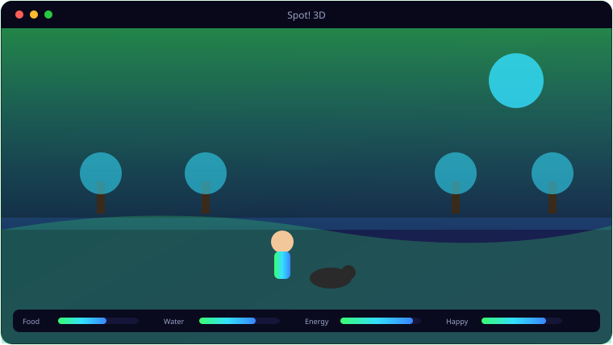

A look inside Spot! 3D.

Everything Spot! 3D brings to the table.
Seamless Open World
One continuous 300-unit world — Home, Park and Neighbourhood — no loading screens, with a third-person orbit camera.
Live Day/Night Cycle
A moving sun, atmospheric sky and volumetric fog shift in real time, with a live clock in the HUD.
Shaders & Effects
Animated water with fresnel and foam, PBR ground and road, 3,000 wind-swayed grass blades, SSAO/SSIL/SSR and colour grading.
Character Creator
Customise skin, hair, jacket, trousers and shoes — or play as the skinned Mixamo “James” model.
Detailed Spot
A fully procedural, animated Rough Collie — tricolour coat, semi-erect ears, wagging tail — with all twelve commands.
A Living Town
Nineteen NPCs with real animal models, twelve vehicles on lane-following traffic, and three-phase animated traffic lights.
System requirements.
Minimum
- OS: Windows 10 (64-bit) or Windows 11
- CPU: Quad-core, 3.0 GHz
- Memory: 8 GB RAM
- Graphics: Dedicated GPU, 2 GB VRAM (OpenGL 3.3 / DX11)
- Storage: 2 GB+ for the game and assets
- Display: 1280×720 or higher
Recommended
- OS: Windows 11 (64-bit)
- CPU: 6–8 core, 3.5 GHz or better
- Memory: 16 GB RAM
- Graphics: GTX 1660 / RX 580 or better, 6 GB+ VRAM
- Storage: NVMe SSD with several GB free
- Display: 1920×1080, 60 Hz+
The details.
| Engine | Godot 4.6.3 Forward+ (non-Mono) |
| Graphics | SSAO/SSIL/SSR, PhysicalSky, volumetric fog, 16k shadow atlas, custom shaders |
| Assets | Kenney environment + Quaternius characters/animals, PolyHaven PBR textures |
| World | 300×300 units, Home/Park/Neighbourhood zones, day/night |
| Platform | Windows 10 / 11 (open in Godot or run the build) |
Get Spot! 3D.
The dog-walk reborn in Godot 4 — day/night, water, real models.
⬇ Download Spot! 3DSpot_3D (Godot project + build) · free · Windows 10/11